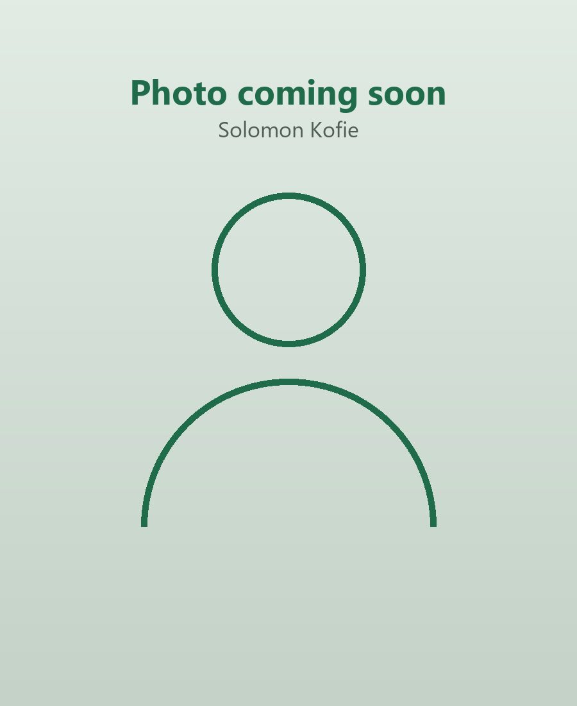

Hi, I'm Solomon.
I am a Bachelor of Education (JHS Specialism, Science) student at the University of Ghana, Legon. Teaching, for me, is an important responsibility: it helps learners develop knowledge, practical skills, positive attitudes and confidence.
& Confident
Why I Teach
My interest in teaching comes from the chance to make learning meaningful and to contribute to the development of young people.
As a student teacher, I want to help learners see that they are capable of learning, even when a topic appears difficult at first. I also want to encourage curiosity, independent thinking and a willingness to learn from mistakes.
The Values I Hold
I want a classroom where learners feel safe to contribute, where differences in ability are recognised, and where every learner is treated with dignity.
My Journey & Background
I am studying for a Bachelor of Education with a JHS specialism in Science at the University of Ghana, Legon.
My internship at Butumagyebu S.T.M.A Primary/JHS, Ketan-Sekondi, teaching Basic 7 Science under my mentor Joseph Slee Quayson, gave me real experience of planning, teaching, assessing and reflecting.
Teaching is the one profession that creates all other professions.— My favourite quote
My Key Skills
Quick Facts
Education
B.Ed JHS Specialism (Science)
University of Ghana, Legon
Practical examples, demonstrations, problem-solving activities and guided practice make abstract concepts easier to understand.— Solomon Kofie
My Teaching Philosophy
My teaching philosophy is learner-centred. I believe learners understand concepts better when they take part in discussions, ask and answer questions, work with others, observe examples and practise what they have learned.
I aim to explain ideas in simple language, connect lessons to learners' experiences and use teaching and learning materials where possible. Practical examples, demonstrations, problem-solving activities and guided practice make abstract concepts easier to understand.
Effective teaching requires preparation, good classroom management, continuous reflection and a willingness to receive feedback. My goal is to keep improving so that I can support learners academically and socially.
Get in Touch
What Drives Me
Every learner can make progress when teaching is purposeful, inclusive and responsive to their needs.